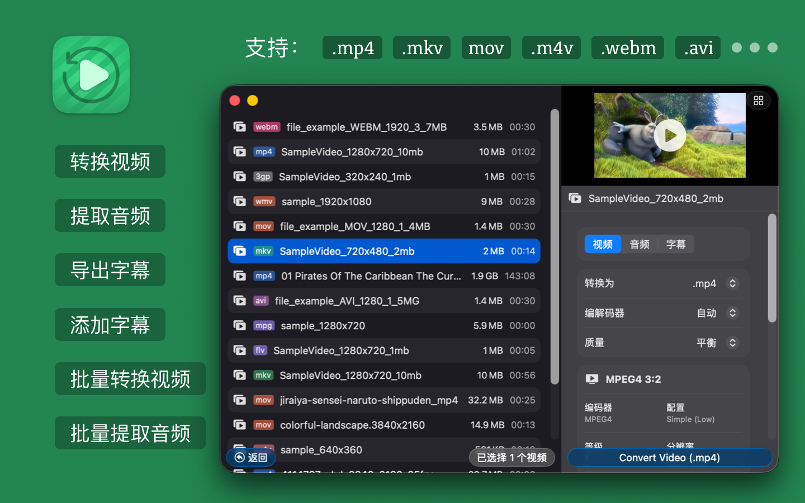
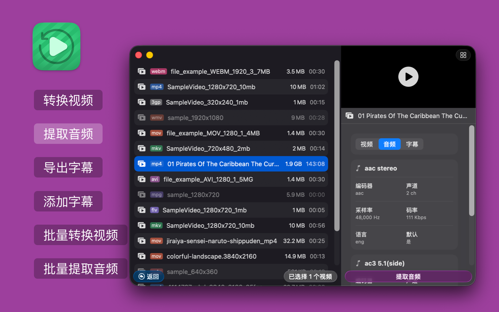
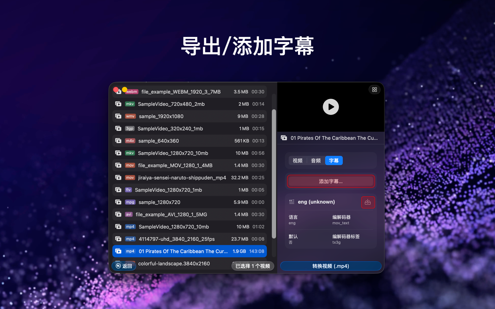

Videoer 是什么？
Videoer 是一款适用于 macOS 的视频格式转换应用，支持视频转码、音频提取、字幕导出和字幕添加。如果你想在 Mac 上快速完成 MP4、MKV、MOV、WEBM、AVI、GIF、3GP、FLV、MPG 等格式转换，Videoer 可以直接满足这类需求。
为什么选择 Videoer？
- 在 macOS 上转换常见视频格式。
- 支持批量处理多个视频文件，提高效率。
- 支持从视频中提取音频并导出为常用音频格式。
- 支持导出视频中的字幕轨道。
- 支持为视频添加字幕文件。
- 支持处理大体积视频文件，包括大于 1GB 的视频。
主要功能
- 视频转换：支持 MP4、MKV、M4V、MOV、WEBM、AVI、GIF、3GP、FLV、MPG 等主流视频格式互转。
- 音频提取：可导出为 MP3、AAC、WAV、FLAC、ALAC、OGG、OPUS、AC3、EAC3、DTS、TrueHD 等格式。
- 字幕导出：支持提取内嵌或外挂字幕，如 SRT、ASS、VTT。
- 添加字幕：可将字幕文件添加到视频中，提升可访问性与观看体验。
- 批量转换：支持同时转换多个视频文件。
- 大文件支持：可处理大于 1GB 的视频文件，并尽量保证输出质量。
- 批量提取音频：支持一次性从多个视频中提取音频。
支持的格式
支持的视频格式
MP4、MKV、M4V、MOV、WEBM、AVI、GIF、3GP、FLV、MPG
支持的音频导出格式
MP3、AAC、WAV、FLAC、ALAC、OGG、OPUS、AC3、EAC3、DTS、TrueHD
支持的字幕格式
SRT、ASS、VTT
适合哪些用户？
Videoer 适合：
- 需要快速转换视频格式的内容创作者。
- 需要提取音频或处理字幕的视频编辑用户。
- 想在 Mac 上使用轻量级视频转换工具的普通用户。
- 经常需要批量处理视频文件的个人或团队。
常见使用场景
- 将 MKV 转换为 MP4，方便播放、分享或上传。
- 从视频中提取音频，用于剪辑、归档或二次创作。
- 导出视频内的字幕轨道，便于整理和复用。
- 为教程、演示或社交媒体视频添加字幕。
- 在 macOS 上批量转换大体积视频文件。
常见问题
Videoer 可以做什么？
Videoer 可以在 macOS 上完成视频格式转换、音频提取、字幕导出和字幕添加。
Videoer 支持批量转换吗？
支持。Videoer 可以批量转换视频，也支持批量提取音频。
Videoer 可以处理大文件吗？
支持。Videoer 支持处理大于 1GB 的视频文件。
Videoer 支持哪些字幕格式？
Videoer 支持常见字幕格式，包括 SRT、ASS 和 VTT。
Videoer 是 macOS 应用吗？
是。Videoer 面向 macOS，并已上架 Mac App Store。